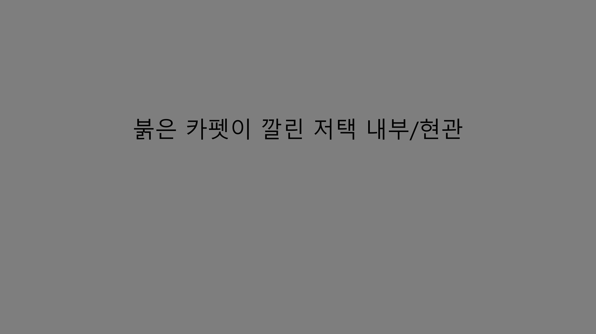

주인공:
그런 셈이죠...?
???:
저희 저택에 초대되지 못한 분은 들어오실 수 없습니다. 어서 나가주시죠.
주인공:
그럴 수는 없...
주인공:
습니다... 어느새, 아니 어떻게 이렇게 빨리 사라져버린 거지?
날이 새도록 숲속을 헤매었지만 나는 보라빛의 저택의 흔적 하나 찾을 수 없었고, 다음날, 그 다음날 그리고 이후 어느 날에도 다시 볼 수 없었다.
Made by. Handahun
본 작품은 Goerge Gordon Byron의 She Walks in Beauty를 모티프로 하여 만들어졌습니다.